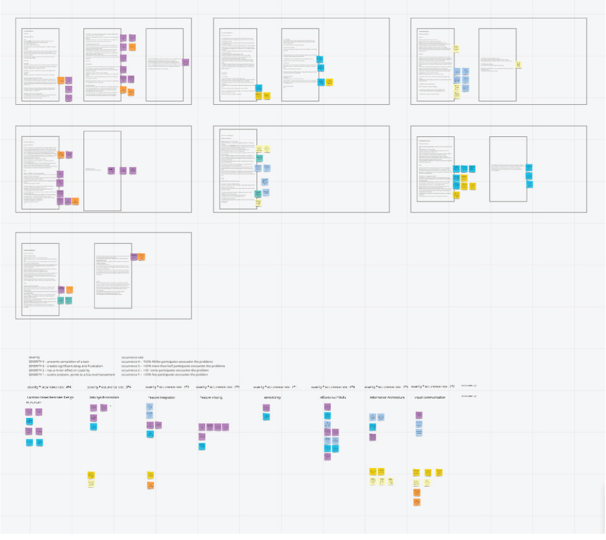
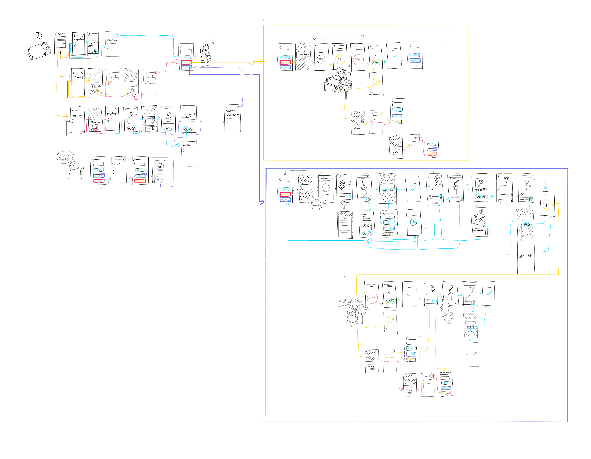

Simple Planner
an Intelligent Logistic Planner for Busy Days
Have you ever experienced the stress of having multiple tasks and events at different times and locations in one day? Simple Planner is a smart logistics assistant that can look into your daily schedule and optimize your trip, saving you time and reducing your stress.
Process
Inspiration
My struggle with being an entrepreneur and a full-time grad student

Earlier this year, I quit my job and started transitioning from an FTE to a full-time master student, while running my consultancy remotely at the same time. Time become a scare resource for me. Meanwhile, as an Eastside resident in the ever-crowding Seattle, figuring out the best time to leave events on the west side with the consideration of traffic, parking, and the walking distance to a nearby cafe to finish some urgent task consumes a decent portion of my cognitive load on daily basis.
Users' discontent with location based reminder

Earlier this year, I participated in a usability study on the reminder in the Google Ecosystem with Microsoft Outlook team. We interviewed eight users who are students and/or young professionals. All the participants who went through the location based reminder task had negative experience and expressed the needs of having a better geographical reminder feature. The findings from this usablity study further motivated me to create this concept.
Below are highligts and quotes from the users.
Missing Functions
Usability Issues
What works?
By analyzing the transcripts from the interviews, I also learned from the study what a user desires when using efficency apps. Below is a screenshot of the affinity diagram I created.
Key findings from the affinity diagram
Affordance Consistency
Keeping consistency in the UX and UI design across different views is important for users' efficiency and confidence; It’s also important to take the mainstream efficiency APP UX conventions into consideration, such as swiping to delete or archive.
Effective Visual Communication
Provide simple but effective visual communication to allow user to grasp the information at a glance.
Storyboarding
The goal of this app is to lighten the users' logistic load and allow them to relax.
Target Audience
Independent professionals who have to manage their dynamic and unpredictable schedules, such as entrepreneurs, freelancers, students, and people on sabbatical.
User Characteristics
Usage Cases
To help myself structure an intuitive information architecture, I first categorized the task into different types according to different scenarios. I then analyze different attributes that constitute the reminder for each type of task.
The tasks are further categorized by five attributes:
Wireframing
I planned out the user flow according to the attributes combination the user can created. All the tasks start with only having a title and end with mark as done.

I quicky sketched out the wireframe based on the key scenarios.

I'm still working on the details for the visual design. Below is my current progress. If you have any suggestion, please drop me an email and let me know:)